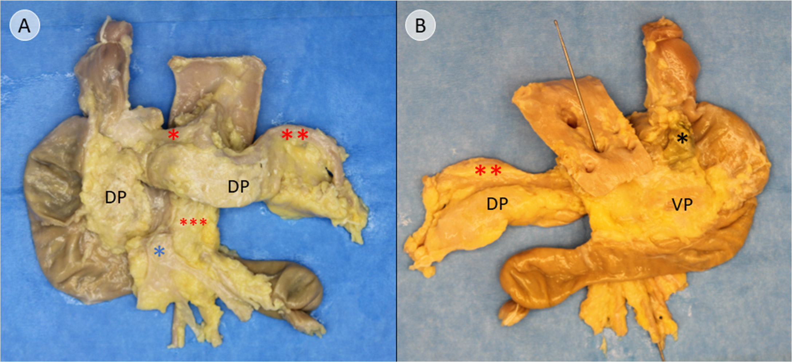
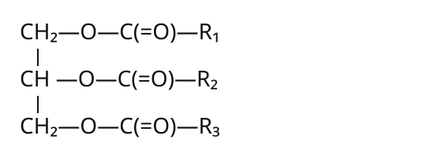
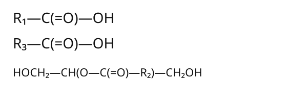

13. Protein and lipid absorption; digestive dysfunction
A meal supplies protein, starch and fat, yet absorbed nutrient delivery falls. The defect could lie in enzyme activation, an aqueous lipid interface, the epithelial surface, or export from the epithelial cell. Those alternatives predict different material left in different places. An intact pancreatic amylase does not rescue a missing protease activator; an intact lipid uptake surface does not rescue failed lipoprotein assembly. The useful question is therefore: which chemical transformation or compartment boundary has failed, and what observation could distinguish it?
Official lectures L28–30 provide the topic sequence and closing problems. Complete English captions were read through their farewells. The separate bounded source-visual audit inspected 163 sampled stills and 19 repeat native frames; its findings are attributed, not claimed as this author's continuous viewing. Scientific corrections and research extensions below use separately checked sources. All numerical rates, times and conceptual transport states are original teaching choices unless identified otherwise. New fixed tissue/dissection observations have their own source preparation and rights; the separate chemical/amount ledgers are not observed molecule trajectories or measured kinetics.
13.1 Protein digestion is controlled cleavage followed by polarized transport L28 01:14
Sequence, folding and the bond being broken
A protein contains one or more amino-acid chains whose sequence and folding enable a biological function. A free standard α-amino acid has an amino group, a carboxyl group, a hydrogen and a side chain attached to its α carbon, with proline's amino nitrogen incorporated into a ring. The side chain, conventionally called the R group, influences charge, polarity and packing. Protonation depends on pH: the neutral NH₂/COOH drawing is chemical bookkeeping, not the only ionic state in intestinal fluid.
A peptide bond is the amide linkage joining residues in a chain. A residue is the portion of an amino acid incorporated into that chain. Internal residues do not retain separate free amino and carboxyl groups at every backbone position. A linear chain has an amino, or N, terminus and a carboxyl, or C, terminus. Writing amino acid + amino acid → dipeptide + water records a net condensation; it is not a mechanism of ribosomal protein synthesis.
Primary structure denotes sequence. Secondary structure denotes local backbone organizations, including α helices and β sheets. Tertiary structure is a chain's three-dimensional fold; quaternary structure is the arrangement of multiple subunits. These are levels of description, not four mutually exclusive protein species. Digestion must gain access to peptide bonds whose accessibility depends on folding and the surrounding food matrix. Collagen and keratin provide structural examples; enzymes catalyze reactions; hemoglobin carries oxygen loaded in pulmonary blood; transport proteins move solutes; insulin and growth hormone signal; antibodies recognize antigens; actin and myosin participate in contraction. Their diversity explains why absorbed amino-acid carbon and nitrogen cannot be assigned solely to energy production.
Denaturation disrupts a protein's native organization without requiring cleavage of its peptide backbone. Proteolysis cleaves peptide bonds enzymatically. Acid in the stomach promotes unfolding and pepsinogen activation; pepsin performs peptide hydrolysis. These are different operations. If one chain unfolds while every peptide bond remains intact, the number of chains remains one. Cutting an internal bond changes chain connectivity. Gastric acid changes protein conformation and supports pepsin activation; pepsin, rather than acid alone, hydrolyzes peptide bonds. OpenStax §23.7, protein digestion, supplies the physiological sequence; the chain-count argument is an original structural check.
Secretion, activation and catalysis are separate events L28 09:28
An endopeptidase cleaves internal peptide bonds. An exopeptidase removes material from a chain end: aminopeptidases act at the N terminus and carboxypeptidases at the C terminus. A dipeptide contains two residues and one ordinary peptide bond; “dipeptide bond” is not a separate bond chemistry. Enzymes have substrate preferences. Trypsin commonly cuts on the carboxyl side of lysine or arginine residues, whereas chymotrypsin favors suitable aromatic residues such as phenylalanine, tyrosine and tryptophan. Neighboring sequence, accessibility and reaction conditions matter; these descriptions are preferences rather than a promise that every eligible bond is cut.
Gastric G cells release the hormone gastrin in response to meal-related signals. Gastrin participates in acid secretion through direct and histamine-mediated signaling to parietal cells. Chief cells release pepsinogen, an inactive precursor; acid-dependent activation and subsequent pepsin action generate active pepsin in the lumen. A zymogen is an enzyme precursor whose activation requires a structural change, often limited proteolytic cleavage. Active pepsin is an enzyme, not an “active zymogen.” Gastric acidity varies with location, time, buffering and secretion; a single pH is not the state of every fed stomach. The stomach begins proteolysis but does not normally convert an entire meal into absorbable free amino acids.
Pancreatic acinar cells deliver protease precursors through ducts into the duodenal lumen. The brush border, the microvillus-rich apical surface of small-intestinal absorptive cells, carries enteropeptidase. It cleaves trypsinogen to initiate trypsin formation. Trypsin activates additional trypsinogen and other pancreatic precursors, including chymotrypsinogen and procarboxypeptidases. Dietary peptide is substrate and signal; it does not turn into enteropeptidase. The NCI definition of pancreatic proteolytic enzymes independently identifies brush-border initiation and the downstream zymogen cascade.
The arrangement solves a protection problem. Potentially destructive proteases are largely synthesized as precursors, stored in secretory compartments, and normally activated downstream in the intestinal lumen. Pancreatic trypsin inhibitor provides another safeguard. These are overlapping defenses, not an absolute guarantee against premature activation. Equally, not every pancreatic enzyme is secreted inactive: amylase and pancreatic lipase cannot be placed indiscriminately into a universal zymogen box. NASPGHAN's pancreatic physiology teaching set, secretion and activation slides, distinguishes enzyme and duct-cell outputs and includes procolipase and prophospholipase A₂ among trypsin-dependent activation targets.
Regulatory signals travel by a different route from digestive enzymes. Small-intestinal I cells release cholecystokinin (CCK) in response to nutrients, notably fatty acids and amino-acid/protein digestion products. CCK promotes pancreatic enzyme delivery and gallbladder contraction, with neural contributions. S cells release secretin in response to acid; secretin strongly promotes ductal bicarbonate-rich fluid. Bicarbonate neutralizes arriving gastric acid and supports intestinal enzyme conditions. These systems interact, but “acid → CCK → liver makes bile immediately” loses both the stimulus/output distinction and the gallbladder's storage-and-release role. Hormones enter the internal signaling circulation; pancreatic digestive products enter a duct and then the gut lumen.
Figure 13.1. Anatomical context at two scales. The dissection shows the pancreas with adjacent duodenum and a source-marked common bile duct; it does not resolve the complete secretory duct confluence. The prepared tissue image shows mucosal organization. These are separate views, not a continuous spatial zoom or a measured transport sequence.

Figure 13.1A. Observed pancreas and adjacent duodenum. Source A is ventral and B dorsal. DP/VP identify embryonic bud-derived pancreatic tissue, not head/tail synonyms. Red* marks the common hepatic artery, red** the splenic artery and red*** the superior mesenteric artery; blue* marks the portal vein and black* in B the common bile duct.
Illustrative female postmortem donor11 was separate from the ten analysed donors; her age is unreported. The organ was removed with adjacent duodenum. Body cooling and dissection alter appearance; these are not live function or calibrated images. The complete liver/gallbladder/main-pancreatic-duct confluence is not depicted. Native/Fit source enlargement and full preparation key.
Alvanos et al. (2025), Biomedicines13:1318, Figure1 · CC BY4.0. Complete published Figure1 assembled from its two contiguous original image tiles (2175×998); original labels retained, with no resampling or new leaders. Source record.

A brush-border reaction is not an intracellular reaction L28 17:04
An enterocyte is an absorptive intestinal epithelial cell. Its apical membrane faces the lumen; its basolateral membrane faces neighboring cells and the tissue compartment. Apical aminopeptidases can shorten luminal peptides. The PEPT1 transporter carries dipeptides and tripeptides with protons across the apical membrane. Intracellular peptidases then hydrolyze much of that imported peptide to amino acids. Thus the existence of cytoplasmic di/tripeptidases does not imply that they were secreted from microvilli; nor must all protein become free amino acid before apical uptake.
Free amino acids use multiple apical systems with different charge and substrate preferences; many depend on sodium coupling. Basolateral amino-acid transport systems support exit toward interstitial fluid and intestinal blood. This is polarized transport across two different membranes. PEPT1 is a transporter rather than a receptor or an unrestricted entry route for arbitrary long oligopeptides. The mechanistic localization is summarized in Thwaites and Anderson, H⁺-coupled transport in the mammalian intestine, PEPT1 section. The usual nutritional route is small-intestinal absorption, not substantial uptake of dietary protein across the normal adult stomach.
PEPT1 directly uses the proton electrochemical gradient. Apical NHE3, sodium/hydrogen exchanger 3, can bring Na⁺ inward while exporting H⁺, helping restore the surface proton environment and intracellular pH. The basolateral Na⁺/K⁺-ATPase uses ATP to export three Na⁺ and import two K⁺ per cycle, maintaining the sodium gradient used by NHE3 and other transport. PEPT1 therefore has proton coupling at its own transport cycle while the epithelial network depends indirectly on sodium and ATP. Drawing the sodium pump apically, or labeling it a direct proton pump, destroys that causal chain.
A useful primary test separates local coupling from whole-body inference. Watanabe and colleagues (2005), accessible abstract, compared engineered HEK293 cells expressing PEPT1 with or without NHE3. PEPT1 alone showed pH-dependent, sodium-independent uptake of the model substrate glycylsarcosine; NHE3 coexpression increased uptake and conferred sodium dependence. That cell-expression experiment supports functional coupling, not a measured absorption fraction in a human meal or proof of direct physical binding between the two proteins.
Figure13.2. Source-contextual protein processing and delivery. A separate selected glycylglycine example crosses apically through H⁺-coupled PEPT1, undergoes intracellular hydrolysis, then releases amino acids basolaterally. Three dipeptide equivalents become six amino-acid equivalents using three water equivalents; the conserved basis is six residues. Free amino acids have additional luminal entry routes. Carrier identity is literature-based, not visible in the fixed mouse SEM. No universal proton ratio, scheduled pump timing, cell inventory or kinetic uptake is imposed.
All intermediate chemical forms and compartment amounts are controlled by one state. Twelve presentation seconds are not biological time. Observed images remain untouched and separate from the accounting. Open paused-start Play/Pause, replay, step, seek, speed and Native/Fit graphs · Source/state record.


Ordered chosen batch: lumen3dipeptides → cell3dipeptides throughPEPT1 → cell6aminoacids after3H₂O-dependent hydrolyses → interstitium6aminoacids. Protein unfolding and luminal proteolysis precede this selected dipeptide route; the chemical graph is a neutral canonical form, not cell-pH protonation. Other sodium/proton fluxes and metabolism are omitted.
SEM:Soayfane et al.(2016),Nutr Metab13:48 Figure2A,CC BY4.0;exactcropwithoriginal4µmbar. Chemicalgraph:originalRDKitfromPubChem11163;independentofspecimen. Complete source/method/rights in linked lab.
Count residues across changing chemical species
A conserved tracer clarifies the running meal case. Choose amino-acid residue equivalents as the protein bookkeeping unit: one dipeptide contains two equivalents, one tripeptide three. Let \(n_P,n_A,n_E,n_B\) denote amounts in mmol of residue equivalents in luminal unprocessed protein/peptide, luminal absorbable products, enterocyte, and delivered blood, respectively. Let \(D,U,X\), in mmol-equivalents/min, denote digestion, apical uptake and basolateral export. Under a closed teaching boundary with no secretion, metabolism or downstream loss,
\[\dot n_P=-D,\qquad \dot n_A=D-U,\qquad \dot n_E=U-X,\qquad \dot n_B=X.\tag{13.1}\]A dot denotes time derivative in minutes. Add the four equations: every internal transfer cancels, giving \(d(n_P+n_A+n_E+n_B)/dt=0\). Hydrolysis increases the number of molecules and consumes water, but does not create amino-acid residues. This is why counting peptide molecules would be the wrong conserved quantity. If uptake temporarily exceeds export, the enterocyte accumulates material even though the blood delivery rate remains limited by export. The simple model combines amino acids and peptides within one absorbable pool; it cannot estimate PEPT1's contribution separately without adding species and transport equations.
Absorbed amino acids support new proteins and nitrogen-containing products, including nucleotide, neurotransmitter and hormone precursors. Carbon skeletons can enter energy metabolism; nitrogen must be transferred and disposed of through nitrogen-handling pathways rather than being equated with ATP. Intestinal and hepatic metabolism mean that portal or peripheral amino-acid appearance is not an exact census of ingested residues. Equation (13.1) deliberately excludes those reactions so that a failed conservation check exposes a coding error rather than an unspecified physiological sink.
The infant antibody aside needs species and endpoint boundaries L28 23:40; repeated L29 25:32
Passive immunity is protection supplied by another individual's immune products. In humans, placental IgG transfer and milk antibodies acting in the infant gut are distinct routes. Secretory IgA in milk can support mucosal protection; biological activity in the lumen does not require its wholesale entry into blood. The large neonatal intestinal immunoglobulin transfer seen in some other mammals, especially ungulates, must not be imported as the general human mechanism. Nor is the correct repair “human neonatal uptake is absolutely impossible.”
Ogra and colleagues' 1977 human study, abstract, reported circulating IgA after an antibody-rich colostrum feed in three infants fed within the first day of life. This narrowly timed observation cannot establish that all human infants routinely absorb all milk antibodies systemically, explain all breastfeeding protection, or justify bypassing digestive physiology. Species, antibody class, developmental age, assay endpoint and mucosal versus systemic action must remain separate. The chapter therefore qualifies the repeated lecture aside rather than promoting it to a universal nutrient-uptake rule.
13.2 Lipid handling crosses interfaces before it crosses epithelium L29 01:09
Different lipids require different chemical accounting
Lipids are a chemically diverse group with substantial hydrophobic character; many are amphipathic, possessing both water-compatible and water-avoiding regions. A fatty acid has a hydrocarbon chain and carboxyl group. Saturated chains lack carbon–carbon double bonds; monounsaturated chains have one and polyunsaturated chains have more. A cis double bond constrains geometry and commonly introduces a bend. Calling all these chains straight loses a structural reason why packing differs.
A triacylglycerol (TAG, also called triglyceride) has three fatty-acyl groups esterified to glycerol. TAG is the major dietary fat form in the source's examples of oils, butter, nuts, meat and seeds; the exact fraction depends on the diet, so the lecture's approximate percentage is not needed as a universal constant. A representative glycerophospholipid has two acyl chains and a phosphate-containing headgroup on a glycerol backbone. That example does not describe every phospholipid, nor does its headgroup represent a chemically vacant site guaranteeing a reaction cascade. Cholesterol is a sterol with a fused-ring framework; free cholesterol contains no attached fatty acid. A cholesteryl ester has a fatty acid esterified to cholesterol's hydroxyl group and is a different substrate.
Lipid supports membranes, energy storage, insulation and physical protection; cholesterol is also a precursor for steroid synthesis. Dietary cholesterol and cholesterol synthesized by the body are different inputs to the same larger balance. The conventional food-energy factor for fat is approximately 9 kcal/g, not a molecule-specific ATP yield or a statement that all lipid is immediately oxidized. Thus an illustrative 10 g fat entry contributes approximately 90 kcal under that accounting convention, without specifying absorption or metabolic fate. Chemical identity remains essential when the meal reaches digestive enzymes.
Emulsification changes area; hydrolysis changes bonds L29 07:26
Water-soluble enzyme must access a lipid–water interface. Emulsification disperses a large lipid phase into smaller droplets through mixing and interfacial stabilization. Bile, produced by liver and stored/concentrated in gallbladder, contains bile salts and other constituents that support this process. A bile salt is an amphipathic molecule, not an enzyme or a miniature membrane with a universal head-and-two-tail geometry. Emulsification leaves ester bonds intact; subsequent lipolysis hydrolyzes them.
For an original geometric calculation, take \(N\) identical spherical droplets of radius \(r\), total lipid volume \(V\), and total area \(A\). Assume the same total volume before and after breakup and ignore interfacial thickness. Since \(V=N4\pi r^3/3\) and \(A=N4\pi r^2\), division gives
\[\frac{A}{V}=\frac{3}{r}.\tag{13.2}\]Reducing radius tenfold increases total area tenfold while increasing droplet count a thousandfold. A teaching volume of 1 mL dispersed into radius-100 μm spheres has total area 0.03 m²; radius-10 μm spheres give 0.30 m². The Python check converts all lengths to meters. This does not prove a tenfold human digestion rate: mixing, enzyme abundance, adsorption, product removal and bile conditions may become limiting. The result explains why physical subdivision can help without confusing it with molecular cleavage.
Pancreatic lipase preferentially hydrolyzes TAG ester bonds at the outer sn-1 and sn-3 positions, producing two free fatty acids and a 2-monoacylglycerol (2-MAG). The sn notation distinguishes glycerol positions stereospecifically. The useful net bookkeeping is TAG + two water molecules → 2-MAG + two fatty acids; intermediate diacylglycerol and further reactions do not alter the identity of the main depicted products. Colipase is a protein cofactor that helps lipase function at the bile-salt-covered interface; it is not the enzyme cutting another ester bond. Phospholipase A₂ produces a lysophospholipid and a fatty acid from suitable phospholipid substrate. Cholesterol esterase hydrolyzes cholesteryl ester to cholesterol plus fatty acid; it does not turn cholesterol into TAG. These reaction roles are supported by NASPGHAN's fat-digestion set, lipolysis and micelle sections.
A droplet, mixed micelle and chylomicron are different objects L29 18:09
A luminal mixed micelle is a dynamic aggregate of bile salts and other amphiphiles carrying lipid digestion products through the aqueous environment toward the epithelial surface. The central physiological distinction is solubilization and delivery: cargo molecules leave the aggregate and cross the apical enterocyte boundary through molecular uptake processes. An intact mixed micelle is not normally swallowed as a vesicle that later becomes a chylomicron. Bile salts largely remain luminal at this stage and are recovered farther downstream through enterohepatic circulation. The usual mixed aggregate is not a membrane bilayer enclosing an aqueous compartment. Its lipid products leave the luminal aggregate before epithelial uptake.
The word “micelle” does not fix one spherical shape or diameter for every intestinal bile–lipid mixture. Composition and conditions change the aggregate population. The corrected teaching diagram therefore distinguishes an amphiphilic aggregate from a bilayer vesicle without treating a drawn circle as structural measurement. Hydrophobic cargo can exchange among phases; a count of schematic dots is not an assay of molecular concentration. This restraint matters because a tidy diagram can otherwise appear more definite than the experimental system.
Inside the enterocyte, long-chain fatty acids are activated and used with MAG in re-esterification pathways to form TAG, principally at the endoplasmic reticulum (ER), the membrane network supporting lipid synthesis and secretory processing. Lysophospholipids can be reacylated; cholesterol can remain free or become esterified. Reassembly is a chemical operation. Packaging is another operation: apolipoprotein B-48 and microsomal triglyceride transfer protein participate in assembly of nascent chylomicrons in the ER, followed by secretory trafficking through the Golgi apparatus, an intracellular membrane system that processes and sorts secretory cargo. ER assembly and subsequent Golgi processing are distinct stages. Ko and colleagues (2020), accessible abstract and key points, separate digestion, uptake, ER re-synthesis/assembly, Golgi processing and secretion; no full-paper access is claimed.
A chylomicron is a lipoprotein particle with a hydrophobic TAG/cholesteryl-ester-rich interior and a surface phospholipid monolayer, free cholesterol and apolipoproteins. This monolayer does not enclose aqueous cytosol as a cell-membrane bilayer does. ApoB-48 is an assembly-associated structural protein; exchangeable proteins such as apoC-II and apoE have later circulation/metabolism roles and cannot simply be listed as one compulsory enterocyte assembly recipe. The indexed cellular passage of NCBI's chylomicron chapter distinguishes apoB-48/MTP from apoC-II acquisition from HDL; direct retrieval was challenged. A chylomicron can be inside a bilayer-bounded secretory vesicle without itself becoming a bilayer vesicle. Two nested objects must be drawn and named separately.
The secretory vesicle fuses with the enterocyte basolateral plasma membrane. Its cargo is released into interstitial tissue, including the lamina propria, the connective tissue beneath intestinal epithelium. Chylomicrons then enter a villus lacteal, a lymphatic vessel, and move through intestinal lymph and the thoracic duct to systemic venous blood. The vesicle does not fly across extracellular tissue and fuse with a remote lacteal wall. This is a correction to wording visible on the source slide itself, not merely a caption spelling repair. The Endotext account, intestinal lipoprotein assembly passage, explicitly separates secretory-vesicle/plasma-membrane fusion, extracellular release and lacteal uptake.
Shorter-chain fatty acids are relatively water-compatible and often have a greater portal route, whereas re-esterified long-chain lipid is preferentially exported in chylomicrons to lymph. This is a route preference with chain-length, substrate, dose and physiological-state dependence; “small goes directly into blood” must not mean bypassing epithelium or an absolute size-only switch. Portal delivery reaches the liver before systemic distribution; lymphatic delivery enters systemic venous blood first. Both routes still require transfer across a tissue barrier. The NASPGHAN transport section contrasts medium-chain portal handling with long-chain chylomicron handling without making the enterocyte disappear.
A primary research extension makes the extracellular step consequential. Zhang and colleagues (2018), abstract and experimental introduction, manipulated endothelial signaling in mice and associated lacteal junction “zippering” with impaired chylomicron entry and resistance to diet-induced obesity. Thus uptake into the epithelial cell is not the last regulated step. The mouse genetic and junction observations do not establish an approved human weight-loss strategy, a universal human uptake fraction, or that “larger pores” alone explain all lipid transport. They motivate keeping interstitium and lymph as distinct compartments.
Figure13.3. Source-contextual lipid processing and delivery. A separate chemical/amount ledger tracks three long-chain acyl equivalents through luminal TAG hydrolysis, molecular apical uptake, intracellular re-esterification/ApoB48-associated assembly, basolateral release, interstitium and lacteal/lymph. Luminal mixed aggregates and bile salts do not enter intact. The conserved amount is not a count of complete lipoprotein particles or one molecular trajectory. The independent fixed vessel reference identifies LYVE1-positive lacteals, not an observed crossing sequence.
All intermediate chemical forms and compartment amounts are controlled by one state. Twelve presentation seconds are not biological time. Observed images remain untouched and separate from the accounting. Open paused-start Play/Pause, replay, step, seek, speed and Native/Fit graphs · Source/state record.


Ordered acyl ledger: lumen3(TAGcargo) → lumen3(2fatty-acid+1MAGacylgroups,2H₂O used) → cell3(molecularproducts) → cell3(re-esterifiedTAG/ApoB48-associatedassembly) → interstitium3(basolateralrelease) → lymph3(lactealentry). A chylomicron has a surface monolayer; its secretory carrier has a bilayer and fuses basolaterally. No generic vesicle/tissue shapes are invented. Storage/oxidation, exact lymph-entry micro-route and shorter-chain portal preference lie outside this selected route.
13.3 Similar bowel symptoms can arise from different mechanisms L30 07:30
Maldigestion is inadequate chemical processing of food; malabsorption is inadequate uptake of nutrients from the intestinal lumen into the body's internal compartments, often used clinically as a broader syndrome including maldigestion. Neither term is a diagnosis by itself. The meal's low downstream signal could reflect deficient pancreatic products, insufficient bile delivery, damaged mucosa or impaired export. Pain and altered stool also occur without a primary loss of absorptive surface. A useful disease comparison therefore begins with the failed mechanism and the evidence that would establish it.
IBS changes gut–brain function without becoming IBD
Irritable bowel syndrome (IBS) is a disorder of gut–brain interaction with recurrent abdominal pain and altered bowel habits. Visceral hypersensitivity means that internal signals produce greater perceived discomfort; altered motility changes mixing and transit. The diarrhea-predominant, constipation-predominant and mixed patterns are termed IBS-D, IBS-C and IBS-M. “Functional” does not mean imaginary. It also does not establish the destructive mucosal inflammation characteristic of inflammatory bowel disease. The NIDDK definition and subtype account supports this distinction.
Gluten is not the universal cause of IBS. Symptom improvement after removing wheat also changes fermentable carbohydrates and other ingredients, so it cannot by itself identify the offending molecule. Dietary approaches, gut-directed psychological therapy and symptom-directed drugs address different parts of gut–brain function; suitability depends on subtype and evidence. The lecture's blanket gluten-free prescription is therefore excluded. A treatment response may generate a hypothesis, but it does not convert IBS into celiac disease or show that every meal-related symptom is an allergy.
IBD names a disease group; Crohn's disease is one member L30 08:57
Inflammatory bowel disease (IBD) includes Crohn's disease and ulcerative colitis, rather than being another name for Crohn's. Crohn's disease can affect the digestive tract in a discontinuous distribution and can involve the full bowel wall, termed transmural inflammation. This helps explain strictures, narrowed segments that can obstruct flow; fistulas, abnormal connections; and abscesses, localized pus collections. Ulcerative colitis principally affects the colon and rectum, with a different distribution and depth pattern. Genetic susceptibility, immune regulation and environmental influences interact; the disorders are not reducible to one overactive cytokine or ordinary food allergy.
Extraintestinal effects can involve joints, skin and eyes, while nutrient loss, inflammation and bleeding can contribute to anemia and poor nutritional state. A raised C-reactive protein (CRP) indicates inflammation without uniquely identifying its site or cause. Stool inflammatory markers, including fecal calprotectin, add intestinal evidence but also require context. Endoscopy with tissue sampling and selected imaging interrogate location, mucosal changes and complications. The NIDDK Crohn's overview and diagnostic account support the combined-evidence approach. CRP alone cannot distinguish IBD from infection or demonstrate a specific nutrient defect.
Induction treatment aims to control active disease; maintenance aims to preserve remission. Immunomodulatory drugs, biologics directed at selected inflammatory pathways and other targeted medicines serve different roles. Corticosteroids are generally a short-term category rather than a universal long-term maintenance solution. Surgery can treat obstruction, fistulas and other complications but does not cure Crohn's disease. The owning NIDDK treatment page supports these boundaries. The lecture's IL-10 discussion remains a research idea, not an established cure; no IL-10 efficacy or prescribing claim is inferred here.
Celiac disease, wheat allergy and nonceliac sensitivity answer different questions L30 11:14
Celiac disease is an immune-mediated disease triggered by gluten in genetically susceptible people, with small-intestinal injury and possible extraintestinal effects. Gluten refers to relevant storage proteins in wheat and related grains. Injury can reduce absorptive capacity and brush-border enzyme function, connecting immune activation to both nutrient malabsorption and secondary lactase deficiency. Anemia or low bone mass can accompany the intestinal disease; a purely gastrointestinal symptom definition is too narrow.
Wheat allergy is an allergic reaction to wheat proteins; nonceliac gluten/wheat sensitivity describes a symptom-associated condition after celiac disease and wheat allergy have been excluded, without assuming gluten is always the unique trigger. These are not progressive stages that inevitably turn into celiac disease. The IQWiG InformedHealth comparison, March 2026, explicitly separates the three. A positive dietary anecdote cannot replace that distinction.
The visible source's “anti-IgA” is an inadequate assay name. Serology tests antibodies in blood: tissue-transglutaminase IgA (tTG-IgA) is commonly used, and total IgA matters because IgA deficiency can undermine IgA-based testing. Other assay classes can be appropriate in that setting. Duodenal biopsies can supply tissue evidence; selected specialist pathways vary by age and clinical setting. HLA-DQ2/DQ8 susceptibility variants are common enough that their presence cannot diagnose disease, while their absence can be useful in exclusion. Testing interpretation depends on gluten exposure, so a self-imposed gluten-free diet can reduce diagnostic yield. These are conceptual testing limits from NIDDK's celiac testing resource, checked 4 November 2026; this chapter does not give a patient testing algorithm or instruct a gluten challenge. A strict gluten-free diet is central to confirmed celiac management, not a universal first experiment for every bowel symptom.
Lactase deficiency is an enzyme problem rather than milk-protein allergy L30 13:03
Lactase hydrolyzes lactose, a milk disaccharide, into glucose and galactose at the brush border. Reduced hydrolysis leaves osmotically active substrate in the lumen and supplies colonic microbes with fermentable material, producing gas and other products. Lactose malabsorption describes the physiological failure; lactose intolerance adds symptoms such as pain, bloating or diarrhea. Neither is synonymous with IgE-mediated milk-protein allergy, and lactose is not a molecule that becomes “overactive.”
Primary lactase nonpersistence is a common developmental decline after infancy. Secondary deficiency follows small-intestinal injury, for example from celiac disease. Congenital lactase deficiency is rare and begins from birth; the source caption's “cognitive” is not a disease category. Symptoms depend partly on dose and context. The NIDDK causes page distinguishes these mechanisms. A hydrogen breath test measures a consequence of unabsorbed lactose reaching microbes and is interpreted with symptoms and competing causes; it is not a direct image of lactase molecules. The NIDDK diagnostic explanation supplies that boundary.
Dietary adjustment may reduce lactose rather than require every person to eliminate all dairy. Lactase-containing products can help some people; treating an underlying mucosal injury may change tolerance. Adequate nutrition must be preserved. The NIDDK treatment account supports individual variation. Probiotics are not presented as a guaranteed restoration of the missing enzyme. This example also shows why the model should distinguish a luminal hydrolysis step from epithelial export: changing one does not demonstrate a defect in the other.
Static equivalent: an initial 100 residue-equivalent units move P → A → E → B. Baseline coefficients are (1,1,1); impaired coefficients are (0.2,1,1) in inverse teaching-time units. At teaching time 2, baseline delivered fraction is about 0.3233 and impaired about 0.0964. Slower hydrolysis leaves more P while total P+A+E+B stays 100. These selected coefficients do not quantify human enzyme deficiency.
13.4 A digestive disease matrix needs anatomy and mechanism L30 01:54 onward
The remaining survey includes barrier failure, mucosal injury, duct obstruction, pancreatic injury, bowel-pattern changes, vascular symptoms, neoplasia and an expulsion reflex. Their common organ system does not imply a common pathogenesis or treatment. The compact matrix indexes the relevant questions; the following paragraphs explain why the distinctions matter. Clinical sources were checked on 4 November 2026. The scope is comparative physiology and investigation categories, without individualized regimens or doses.
| Condition | Principal mechanism/location | Key distinction |
|---|---|---|
| GERD | Reflux across gastroesophageal barrier | Acid suppression changes acidity; does not by itself reconstruct the barrier |
| Peptic ulcer | Stomach/duodenal mucosal injury | H. pylori, NSAIDs and uncommon hypersecretory causes differ |
| IBS / IBD | Gut–brain dysfunction / inflammatory tissue disease | Similar stool symptoms do not identify either mechanism |
| Celiac / lactase deficiency | Gluten-triggered immune injury / limited disaccharide hydrolysis | Secondary lactase loss can connect them without making them identical |
| Gallstones / pancreatitis | Biliary crystallization/obstruction / pancreatic inflammation | Obstruction location can connect organs without equating the diseases |
| Constipation / diarrhea | Transit, evacuation and fluid handling | Phenotypes with multiple causes rather than single etiologies |
| Foodborne illness | Pathogen infection or ingested toxin | Antibiotics do not neutralize preformed toxin |
| Hemorrhoids / colorectal neoplasia | Anorectal vascular cushions / abnormal epithelial growth | Bleeding is a symptom, not a sufficient diagnosis |
| Vomiting | Coordinated brainstem/visceral motor response | A reflex can be protective without always being beneficial |
Reflux and ulceration expose different failures L30 05:24
Gastroesophageal reflux is backward movement of gastric contents into the esophagus. GERD is reflux producing troublesome symptoms or complications. The lower esophageal sphincter and surrounding anatomy provide a functional barrier; transient relaxations, impaired pressure, hiatal hernia and abdominal pressure can alter it. Occasional reflux is not automatically disease. Heartburn, regurgitation and sometimes extraesophageal symptoms can occur, but symptoms alone are not perfectly specific. Endoscopy examines mucosa and selected reflux monitoring measures exposure; test selection depends on the clinical question. The NIDDK GER/GERD distinction anchors the definition.
Antacids neutralize existing acid. Histamine H₂-receptor blockers reduce a stimulatory secretory pathway; proton-pump inhibitors reduce the gastric proton-pump step. They are not interchangeable with physically repairing a reflux barrier. Dietary/behavioral measures, medicines and selected procedures target different contributors. The NIDDK treatment categories support this mechanism-level comparison. Chest pain cannot safely be assigned to reflux from a textbook symptom match, and the source's “total destruction” language is not retained.
A peptic ulcer is a mucosal defect in stomach or duodenum, distinct from merely detecting reflux. Important causes include H. pylori infection and nonsteroidal anti-inflammatory drugs (NSAIDs); uncommon hypersecretory conditions such as Zollinger–Ellison syndrome are another category. Pain, nausea or vomiting may accompany ulcers; bleeding, perforation or obstruction are possible complications. Endoscopy can inspect a lesion, while urea breath, stool-antigen or selected biopsy-based testing address H. pylori. Serologic antibody persistence makes it unsuitable as a simple eradication-success signal. NICE's dyspepsia/ulcer guidance preserves the etiological differential rather than equating all ulcers with infection.
The lecture's “triple or quadruple therapy” is historical classification, not a current prescription. The ACG 2024 H. pylori guideline highlights require resistance-aware selection and post-treatment confirmation of eradication. An acid-suppression response is not proof of bacterial eradication. H₂ blockade is not a general anti-inflammatory or hemostatic action, and a bleeding ulcer needs assessment and selected endoscopic management rather than an unqualified “hemostatic agent” instruction.
Gallstones and pancreatic inflammation depend on where outflow fails L30 14:33
Gallstones are solid material formed in the biliary system, commonly cholesterol-rich or pigment material associated with bilirubin, with mixed compositions possible. Cholesterol supersaturation increases the drive for crystal formation; nucleation and gallbladder residence/motility help determine whether a stone develops. Risk associations include obesity and rapid weight loss, but a risk factor is not a deterministic cause. Many stones are silent. The important symptomatic mechanism is often obstruction and its inflammatory consequences, rather than reduced space available for stored bile. The common hepatic duct carries bile from the liver. The cystic duct connects the gallbladder to that route; below their junction, the common bile duct carries bile toward the duodenum. A stone confined to the cystic duct obstructs gallbladder drainage while leaving the liver-to-duodenum route potentially open. A stone in the common bile duct below that junction can obstruct onward bile delivery from the liver as well. Near the duodenal outlet, the bile and main pancreatic ducts commonly share a terminal passage, so obstruction there can also disturb pancreatic drainage. Anatomical variants and the exact stone position matter. NCI SEER's biliary anatomy account identifies the duct connections; this branching arrangement explains why “a blocked bile duct” is an insufficient location description.
The NIDDK gallstone account distinguishes silent stones and duct blockage. Ultrasound and selected duct imaging examine the relevant anatomy. Cholecystectomy removes the gallbladder; an endoscopic duct procedure can remove an obstructing common-duct stone. Selected nonsurgical dissolution applies to particular cholesterol-stone situations and can have recurrence; it is not a universal solution for all stone types. The NIDDK treatment page makes this narrower than the lecture's broad favorable drug claim. Liver bile production can continue after gallbladder removal.
Pancreatitis is pancreatic inflammation. Premature digestive-enzyme activation and tissue injury contribute to pathogenesis, but the whole syndrome includes inflammatory and systemic processes. Gallstone-associated outflow disturbance and alcohol-associated disease are important etiological categories; genetic, metabolic, medication-related and other causes also exist. The main pancreatic duct normally drains pancreatic secretion into the duodenal region, often near the common-bile-duct outlet. Obstruction near that outlet can connect biliary stones to pancreatic injury; saying only “bile duct blockage” does not specify the relevant location.
Acute and chronic pancreatitis are different disease contexts. Pain, pancreatic enzymes and selected imaging contribute to assessment; neither an isolated serum lipase nor its magnitude is a universal severity meter. Chronic damage can impair exocrine enzyme delivery and cause maldigestion. The NIDDK diagnosis page separates history/examination, biochemical findings and imaging. Supportive acute care and pancreatic-enzyme replacement for selected exocrine insufficiency address different problems; replacement is not a generic cure for acute pancreatic inflammation. No personal fluid, feeding, imaging or drug algorithm follows from this survey.
Bowel frequency and water balance require a mechanism L30 17:54
Constipation can include infrequent stools, hard stools, difficult passage or incomplete evacuation. Slow colonic transit, pelvic-floor evacuation dysfunction and secondary medication, metabolic or neurological causes differ from simple low fluid intake. A colonoscopy is selected for clinical indications rather than required by every constipation complaint. Fiber/fluid adjustment, laxative categories and treatment of an underlying cause are distinct strategies whose suitability depends on the mechanism. The NIDDK symptom/cause account lists these alternatives. Increasing luminal water cannot alone prove that coordinated outlet function is normal.
Diarrhea is loose/watery stool, commonly with increased frequency; it can reflect retained osmotic solute, excessive secretion, inflammation or altered motility and transit. In osmotic diarrhea, poorly absorbed solute favors retention of water. In secretory diarrhea, net electrolyte secretion or reduced absorption drives fluid movement. Inflammatory injury adds exudation, impaired barrier and altered transport. These categories can overlap. Fluid and electrolyte loss can become serious even when the primary problem is not nutrient-calorie malabsorption. Oral rehydration uses coupled absorptive pathways that can remain functional despite a secretory insult, connecting this chapter to sodium-coupled glucose uptake in Chapter 12.
Foodborne illness includes infection by bacteria, viruses or parasites and illness from ingested toxins. Prevention requires hygienic handling, appropriate cooking and storage; cooking does not guarantee toxin removal. The CDC staphylococcal food-poisoning page gives a decisive counterexample: cooking can kill the bacterium while leaving its preformed toxin, and antibiotics do not treat that toxin's effect. Likewise bacterial diarrhea does not imply automatic antibiotic benefit. The CDC E. coli treatment account warns that antibiotics in Shiga toxin-producing infection can increase hemolytic uremic syndrome risk. Rehydration and selected cause-specific treatment remain separate decisions, as in NIDDK's diarrhea treatment categories. No universal antibiotic or antidiarrheal prescription is retained.
Bleeding does not specify a lesion L30 20:56
Hemorrhoids involve symptomatic enlargement/displacement of anorectal vascular cushions and their supporting tissue, often described clinically as swollen veins. Internal lesions arise above the dentate-line region; external lesions are under the skin around the anus. Their anatomy and innervation help explain different pain patterns, but pain alone does not classify every lesion. Straining, pregnancy and support changes are relevant associations. They are not swollen glands. Examination and selected further assessment distinguish hemorrhoidal bleeding from fissures, inflammation or neoplasia. Management ranges from bowel-habit measures to office procedures and selected surgery; all lesions do not require removal. The NIDDK hemorrhoid overview supports the internal/external distinction; the source caption's unidentified “laseroscopy” is excluded.
A polyp is a growth projecting from the mucosal lining. Adenomatous polyps are important precancerous lesions; ordinary small hyperplastic polyps usually have a different risk profile. Serrated lesions make “all nonadenomas are harmless” another unsafe generalization. Not every polyp becomes cancer. Neoplastic progression is a multistep process; metastasis is spread of malignant cells to distant sites, not simply a polyp growing larger. Hereditary susceptibility, age, inflammation and exposures contribute to risk without making cancer evidence of personal blame. The NIDDK polyp overview separates common benign growths, potential progression and prevention through selected removal.
Screening concerns people without symptoms, whereas evaluation of bleeding or a changed bowel pattern is diagnostic work. Stool-based tests and direct visualization answer different screening questions; a positive noninvasive screen can require colonoscopic follow-up. Imaging assists selected staging rather than replacing tissue diagnosis. Colon and rectal cancer also have different local anatomy and treatment patterns. NCI's colon cancer PDQ includes surgery and adjuvant systemic treatment for stage III disease; its rectal cancer PDQ describes distinct multimodal local strategies. Radiation is not a universal early-colon-cancer default, and stage III or IV is not synonymous with inevitable imminent death. Prognosis depends on stage, tumor biology, treatment and patient context. The source's fatalistic generalization is excluded.
Vomiting is coordinated expulsion, not a universal detoxification assay L30 26:26
Vomiting, or emesis, forcibly expels gastric contents and sometimes refluxed upper-intestinal material through the mouth. Brainstem networks coordinate visceral, respiratory and abdominal motor actions while receiving gastrointestinal, vestibular and circulating-chemical signals. The area postrema is a specialized brainstem region participating in chemical-triggered responses; it is not the only controller for every vomiting stimulus. The NCBI area-postrema account, indexed physiological passages supports this input/output separation; full direct retrieval was challenged.
Expulsion may remove harmful contents, but it can also reflect drugs, motion or illness without a removable food contaminant. It does not prove that every pathogen or toxin has been removed, and repeated emesis itself can cause fluid/electrolyte problems. The closing disease survey therefore does not reduce all symptoms to bad habits, nor infer a mortality outcome from a disease name. The lecture's final cholesterol-rich-bile question returns to supersaturation and nucleation in Problem 13.6.
13.5 Reproduce a mass balance, then test what it cannot identify
Equation (13.1) uses physical time \(t\) in minutes and fluxes in mmol of residue equivalents per minute. For the following deliberately synthetic example, choose an arbitrary reference interval \(t_0\) in minutes and define the dimensionless clock \(\tau=t/t_0\). Let \(k_D,k_U,k_X\) be nonnegative transfer coefficients per unit \(\tau\), so \(dn_P/d\tau=-k_Dn_P\), \(dn_A/d\tau=k_Dn_P-k_Un_A\), \(dn_E/d\tau=k_Un_A-k_Xn_E\), and \(dn_B/d\tau=k_Xn_E\). The corresponding physical-time flux is \(D=(k_D/t_0)n_P\), with analogous expressions for \(U\) and \(X\); no value of \(t_0\) or rate was measured in a person. Set the initial state to \((n_P,n_A,n_E,n_B)=(100,0,0,0)\) conserved equivalents. The same serial topology can track glucose-residue, amino-acid-residue, or lipid-acyl equivalents, but each nutrient requires its own bookkeeping unit; their numerical amounts cannot be added without a stated conversion.
For the baseline \(k_D=k_U=k_X=1\), integrating the first equation gives \(n_P=100e^{-\tau}\). The second equation is \(dn_A/d\tau+n_A=100e^{-\tau}\). Multiplication by \(e^\tau\) makes its left side a product derivative; integration from zero gives \(n_A=100\tau e^{-\tau}\). Repeating the integrating-factor step for the enterocyte gives \(n_E=50\tau^2e^{-\tau}\). Conservation determines delivery:
\[n_B(\tau)=100\left[1-e^{-\tau}\left(1+\tau+\frac{\tau^2}{2}\right)\right].\tag{13.3}\]At \(\tau=2\), the pools are 13.533528, 27.067057, 27.067057 and 32.332358 equivalents, summing to 100 within rounding. Reducing hydrolysis alone to \(k_D=0.2\) gives 67.032005, 13.374619, 9.951510 and 9.641867 equivalents. More material remains upstream and less has reached the receiving compartment. No change in total amount is needed to obtain a large change in delivery. Figure 13.4 uses these same transfer equations and one shared state for bars and numbers.
The standard-library Python program evaluates arbitrary nonnegative coefficients by a positive transition-series method. Write the linear system as \(d\boldsymbol n/d\tau=Q\boldsymbol n\), where \(\boldsymbol n\) is the column of four pool amounts and \(Q\) has each outgoing rate on the negative diagonal and the matching incoming rate immediately below it. Each column sums to zero. Choose \(q=\max(k_D,k_U,k_X)\). For positive \(q\), the matrix \(T=I+Q/q\), where \(I\) is the identity, has nonnegative entries and unit column sums. The exact solution can be written
\[\boldsymbol n(\tau)=e^{-q\tau}\sum_{m=0}^{\infty}\frac{(q\tau)^m}{m!}T^m\boldsymbol n(0).\tag{13.4}\]This follows by splitting \(Q=q(T-I)\) and expanding the matrix exponential; \(T\) commutes with \(I\). Each term redistributes the same inventory, and the scalar weights sum to one. The implementation subdivides long intervals so each series has \(q\Delta\tau\leq1\), then truncates a negligible positive tail. It tests against (13.3), conservation, nonnegativity, split-time consistency, amount scaling, zero rates and rejection of nonfinite/negative inputs. The total initial inventory must also be representable as a finite floating-point number; an overflowing sum is rejected before any propagation. A nonfinite substep result also raises an error instead of being returned. It rejects an excessive teaching range rather than silently running an unbounded calculation. Inputs are explicit pools, coefficients and duration; outputs are four amounts. Its only external effect is console printing. This numerical method preserves the mathematical model; it does not validate a disease model.
There is a deeper inverse-problem limitation. Permuting the same three rates changes internal pool distributions but leaves the final delivery-time distribution unchanged in this ideal serial chain. One interpretation is a sum of three independent exponential waiting times; addition is insensitive to their order. Equivalently, the Laplace transform with respect to \(\tau\) of the final-arrival density is \(\prod_{i\in\{D,U,X\}} k_i/(s+k_i)\), where \(s\) and the \(k_i\) are dimensionless because \(\tau\) is dimensionless. Thus a slow hydrolysis step, slow uptake step and slow export step can produce the same entire delivery curve. No amount of more precise measurement of that curve alone can identify the order of the bottleneck under these assumptions. A regional measurement or intervention is needed. Biological feedback and parallel routes can break the equivalence, which is exactly why model assumptions must accompany an inference.
The real gut includes transit, changing volume, secretion, multiple enzyme/substrate species, metabolism, storage, microbiota and feedback. Lipid additionally needs explicit ER/Golgi/interstitial/lymph states if the question concerns which export boundary fails; combining them into \(X\) is unsuitable for that question. The lab's separate nutrient labels are a comparison of conditional bookkeeping, not a simulation of one meal's complete carbon, nitrogen, water and energy balance. A realistic anatomical view would add spatial context without repairing missing equations or providing measured rate coefficients.
13.6 Six problems with fully worked solutions
Problem 13.1. Separate unfolding, cutting and absorption
A linear chain has 12 residues. Acid unfolds it without hydrolyzing its backbone; an endopeptidase then cuts three distinct internal peptide bonds. How many chain fragments and peptide bonds remain? If some fragments are di/tripeptides, must they all be hydrolyzed outside the enterocyte? Repair a diagram putting all final peptidases on the microvilli.
Worked solution
The initial chain has 11 backbone peptide bonds. Unfolding changes accessibility and organization but leaves one chain and 11 bonds. Each distinct internal cut increases fragment count by one, so three cuts yield four fragments and eight remaining peptide bonds. Twelve residue equivalents remain throughout; fragment count is not a conserved quantity.
Apical aminopeptidases can act on luminal substrate. PEPT1 can import di/tripeptides with protons; cytoplasmic peptidases then release amino acids inside the enterocyte. The drawing needs both locations and a membrane transport event between them. Longer peptide fragments need further suitable processing; the existence of PEPT1 does not license arbitrary polymer uptake. Basolateral amino-acid exit and subsequent interstitial/capillary transit complete the nutritional route toward portal blood.
Problem 13.2. Derive a proton-coupling boundary without confusing the pumps
Use an explicitly idealized cycle importing one H⁺ with one electrically neutral peptide. Let \(c_{p,E}/c_{p,L}\) be its intracellular/luminal concentration ratio, \(T=310\) K, \(R=8.314\) J/(mol·K), \(F=96485\) C/mol and \(\Delta\psi=\psi_E-\psi_L=-0.040\) V. Surface and intracellular pH are 6 and 7.2. Derive the reversible accumulation boundary. Explain its limits and place PEPT1, NHE3 and Na⁺/K⁺-ATPase on the correct faces.
Worked solution
For this selected neutral substrate and ideal activities, the molar cycle free energy is \(\Delta G=RT\ln(c_{p,E}/c_{p,L})+RT\ln(c_{H,E}/c_{H,L})+F\Delta\psi\). A favorable forward cycle has negative total free energy. Set it to zero and solve for the peptide ratio: \(c_{p,E}/c_{p,L}=10^{\mathrm{pH}_E-\mathrm{pH}_L}\exp[-F\Delta\psi/(RT)]\). The chemical factor is \(10^{1.2}\); multiplying the voltage factor gives 70.848051. Equal pH and zero voltage give one, the expected reversible limit.
PEPT1 is apical and directly H⁺ coupled. NHE3 is apical, importing Na⁺ while exporting H⁺. The sodium pump is basolateral, exporting three Na⁺/importing two K⁺ per ATP. It maintains sodium driving indirectly; it is not the direct PEPT1 proton pump. The computed ratio is a reversible thermodynamic boundary under the stated one-proton/neutral-cargo assumptions, not a measured human ratio or a universal stoichiometry for all charged PEPT1 substrates. Intracellular peptide hydrolysis and other fluxes alter actual steady states.
Problem 13.3. Make area and reaction stoichiometry agree
Disperse 1 mL of lipid into identical droplets with radius 100 μm, then into radius 10 μm. Compute both areas and the ratios of area and droplet count. Separately hydrolyze 2 mmol TAG by the main pancreatic-lipase route. What products and water consumption follow, and why are these calculations independent?
Worked solution
Convert 1 mL to \(10^{-6}\) m³ and the radii to \(10^{-4}\) and \(10^{-5}\) m. Equation (13.2) gives 0.03 and 0.30 m². Area grows tenfold, while the fixed-volume droplet count grows as inverse radius cubed, hence a thousandfold. No ester bond was counted as broken during this geometric operation.
The depicted TAG reaction consumes two water molecules and yields one 2-MAG plus two fatty acids per TAG. Thus 2 mmol TAG yields 2 mmol MAG and 4 mmol free fatty acids while consuming 4 mmol water. The six mmol acyl equivalents are conserved: two remain bound in MAG and four are free. Emulsification determines interface, hydrolysis changes species, mixed aggregates deliver molecular cargo, and intracellular assembly creates a later particle. None is equivalent to moving one intact oil droplet into lymph.
Problem 13.4. Solve the enteropeptidase-deficiency closing exercise L29 26:01; L28 23:55
Assume severe loss of brush-border enteropeptidase with otherwise intact secretion, mucosa and transport. Predict the direct protein effect, consequences for nutrition, and possible carbohydrate/lipid effects. Explain why neither “every digestive enzyme stops” nor “lipid is completely unaffected” is justified. Identify the dietary reasoning without prescribing a regimen.
Worked solution
Loss of initiation impairs trypsinogen activation, thereby reducing the trypsin-dependent activation of other pancreatic protease precursors. Gastric pepsin and existing brush-border/intracellular activities are not identical to this cascade and do not vanish by definition. Less protein becomes suitable uptake substrate, so protein digestion and nutritional amino-acid supply can be severely impaired despite intact transporters. This can threaten growth and protein nutrition; a transporter cannot import products that were not adequately generated.
Amylase and disaccharidases do not require enteropeptidase to cleave their own carbohydrate substrates, so a direct universal block of carbohydrate digestion does not follow. Lipid digestion is more nuanced: trypsin activates procolipase and prophospholipase A₂. Their compromised activation can influence lipase interfacial support and phospholipid digestion even though pancreatic lipase itself is not simply switched off as a trypsin-dependent zymogen. Other lipases and pathways remain. Severity and residual activity require evidence, not a zero-or-one cartoon.
Nutritional reasoning asks whether adequate amino-acid and energy delivery can be maintained and whether bypassing an impaired processing step is appropriate under specialist care. It does not infer one diet, supplement dose or treatment from a genetic label. Replacing the complete model with only a reduced \(k_D\) is an explanatory comparison; actual cascade effects span enzyme classes and cannot be quantified by the selected 0.2 coefficient.
Problem 13.5. A perfect delivery curve can still fail to locate the defect
Run the four-pool model at teaching time 2 for rates (1,1,1), (0.2,1,1), (1,0.2,1) and (1,1,0.2). Compare delivery and internal storage. Design an additional measurement that breaks the ambiguity, then state which extra compartments a lipid-export study would need.
Worked solution
The baseline yields \((13.533528,27.067057,27.067057,32.332358)\). Reduced digestion yields \((67.032005,13.374619,9.951510,9.641867)\); reduced uptake yields \((13.533528,66.873095,9.951510,9.641867)\); reduced export yields \((13.533528,27.067057,49.757548,9.641867)\). Each row sums to 100 within rounding. All three impaired cases deliver the same amount, although their retained pools differ markedly. Rate-order symmetry also makes their entire final arrival curves identical in this model, not just this endpoint.
A measurement distinguishing intact luminal substrate from absorbable products separates slow digestion from slow uptake. An epithelial storage measurement helps distinguish uptake from export limitation. A controlled substrate-bypass experiment is another model-informed possibility, but a human experiment requires appropriate ethical and clinical design. For lipid export, resolve ER processing, particle assembly, Golgi/secretory delivery, basolateral release, interstitial storage and lacteal entry instead of inferring all of them from one blood signal. Nutrient class labels alone do not identify the failed boundary.
Problem 13.6. Answer the cholesterol-rich-bile question without diagnosing from one variable L30 27:03
Explain how excessive cholesterol relative to its biliary solubilizing environment can increase stone risk. Does this guarantee pain or identify a treatment? Then distinguish four hypothetical explanations for similar post-meal abdominal symptoms: IBS, Crohn's disease, celiac disease and lactase deficiency. What cannot be inferred from symptom improvement after eliminating wheat or milk?
Worked solution
Supersaturation increases the thermodynamic drive for cholesterol precipitation. Crystal nucleation, growth and retention/motility influence whether macroscopic stones form. A stone may remain silent; obstruction location and inflammation help determine symptoms and complications. Consequently cholesterol-rich bile supports a risk mechanism, not certainty of a symptomatic stone, a unique imaging result or a universal dissolution prescription. Cholesterol and pigment composition, duct location and clinical context change management.
IBS concerns gut–brain interaction and bowel function; Crohn's disease involves inflammatory tissue disease with its own distribution and complications; celiac disease involves gluten-triggered immune injury in susceptible people; lactase deficiency limits lactose hydrolysis with osmotic/fermentation consequences. Their symptoms overlap and conditions may coexist. Removing wheat changes more than gluten; removing milk changes lactose, protein and other dietary context. Improvement alone does not prove celiac disease, allergy, an inflammatory lesion or a specific missing enzyme. Starting gluten exclusion also changes the conditions for celiac testing. Mechanism-specific evidence must accompany a diagnosis; a shared symptom or diet response cannot supply it.
13.7 Evidence and reproducibility boundaries
The lecture spine is L28 protein digestion, L29 lipid digestion and L30 digestive disorders, in NPTEL Human Physiology, Sudip Mukherjee, IIT (BHU) Varanasi. Complete captions end at 24:43, 27:15 and 28:24, respectively. Closing questions are retained in Problems 13.4 and 13.6. The bounded visual audit supplies source-slide observations; neither captions nor sampled frames certify molecular trajectories or continuous video coverage.
Mechanistic checks used the linked owning textbook/institutional accounts, NASPGHAN pancreatic and fat-digestion teaching PDFs, Watanabe's engineered-cell abstract, Ogra's human neonatal abstract and Zhang's mouse lacteal abstract/introduction. These sources support different levels of inference. The NASPGHAN diagrams are not redistributed; their permission labels do not license copying. The narrow neonatal observation is not generalized to all human infants, and mouse junction manipulation is not presented as human therapy. The ideal energy, geometric and compartment results are original deductions under stated assumptions. The protein/lipid illustrations now use source-contextual chemical connectivity and changing conserved-equivalent pools instead of invented rectangular cells or ellipse organelles; source photographs are not registered to each other or to a literal molecular path. Observed anatomy now additionally uses the credited CC BY4.0 Alvanos2025 pancreas/duodenum photograph and separate Paavonsalo2023 mouse vessel channels. The old connectivity artwork is retired; the observations do not supply a complete registered organ/terminal-papilla model or molecule trajectory. A separate source-labelled living-donor MRCP now supports major duct topology; it is not registered to those other specimens.
Clinical pages from NIDDK, CDC, NICE, ACG and NCI were checked on 4 November 2026 for the claims linked beside them. Source pages have different review dates and some guideline pathways evolve. Celiac testing is described conceptually without choosing age-specific biopsy/no-biopsy thresholds or a personal challenge protocol. H. pylori resistance and eradication confirmation are retained without drug doses. IBS and IBD are separated; source claims of universal gluten causation, routine IL-10 cure, universal antibiotic benefit, swollen glands, automatic polyp progression and deterministic late-stage mortality are excluded or corrected. Full direct access to some NCBI pages and NICE material was challenged; indexed owning-source passages and the specifically accessible accounts were used only for the stated bounded claims. No full-paper reading is implied by an abstract link.
All three controlled mechanisms have explicit presentation clocks, no autoplay, keyboard-operable native controls, deterministic phase/state functions, and adjacent static explanations. The Python model implements the equations; the JavaScript controls implement staged topology and the same synthetic compartment balance. These are original explanatory assets. Their artificial colors, open boundaries, symbolic particle sizes and stage durations are not histological observations, calibrated anatomy or experimental dynamics. The important inferential limit remains: low nutrient delivery can constrain a model without uniquely locating a defect.